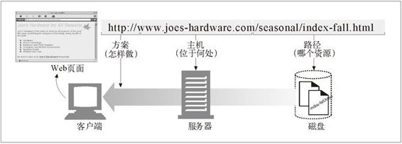

2.1 浏览因特网资源
URL 是浏览器寻找信息时所需的资源位置。通过 URL，人类和应用程序才能找到、使用并共享因特网上大量的数据资源。URL 是人们对 HTTP 和其他协议的常用访问点：一个人将浏览器指向一个 URL，浏览器就会在幕后发送适当的协议报文来获取人们所期望的资源。
URI 是一类更通用的资源标识符，URL 实际上是它的一个子集。URI 是一个通用的概念，由两个主要的子集 URL 和 URN 构成，URL 是通过描述资源的位置来标识资源的，而 URN（本章稍后会介绍）则是通过名字来识别资源的，与它们当前所处位置无关。
HTTP 规范将更通用的概念 URI 作为其资源标识符，但实际上，HTTP 应用程序处理的只是 URI 的 URL 子集。本书有时会不加区分地使用 URI 和 URL，但我们讲的基本上都是 URL。
比如说，你想要获取 URL http://www.joes-hardware.com/seasonal/index-fall.html。那么 URL 分以下三部分。
URL 的第一部分（http）是 URL 方案（scheme）。方案可以告知 Web 客户端怎样访问资源。在这个例子中，URL 说明要使用 HTTP 协议。
URL 的第二部分（www.joes-hardware.com）指的是服务器的位置。这部分告知 Web 客户端资源位于何处。
URL 的第三部分（/seasonal/index-fall.html）是资源路径。路径说明了请求的是服务器上哪个特定的本地资源。
对此的说明请参见图 2-1。

图 2-1 URL 是怎样与浏览器、客户端、服务器以及服务器文件系统中的位置进行关联的
URL可以通过HTTP之外的其他协议来访问资源。它们可以指向因特网上的任意资源，或者个人的email账户：
mailto:president@whitehouse.gov
或者通过其他协议（比如FTP协议）访问的各种文件：
ftp://ftp.lots-o-books.com/pub/complete-price-list.xls
或者从流视频服务器上下载电影：
rtsp://www.joes-hardware.com:554/interview/cto_video
URL 提供了一种统一的资源命名方式。大多数 URL 都有同样的：“方案 :// 服务器位置 / 路径”结构。因此，对网络上的每个资源以及获取这些资源的每种方式来说，命名资源的方法都只有一种，这样不管是谁都可以用名字来找到这个资源了。但是，事情并不是一开始就是这样的。
URL出现之前的黑暗岁月
在 Web 和 URL 出现之前，人们要靠分类杂乱的应用程序来访问分布在网络中的数据。大多数人都不会幸运地拥有所有合适的应用程序，或者不能够理解，也没有足够的耐心来使用这些程序。
在 URL 出现之前，要想和朋友共享 complete-catalog.xls 文件，就得说这样一些话：“用 FTP 连接到 ftp.joes-hardware.com 上。用匿名登录，然后输入你的用户名作为密码。变换到 pub 目录。转换为二进制模式。现在，可以将名为 complete-catalog.xls 的文件下载到本地文件系统，并在那里浏览这个文件了。”
现在，像网景的 Navigator 和微软的 Internet Explorer 这样的浏览器都将很多这样的功能捆绑成一个便捷包。通过 URL，这些应用程序就可以通过一个接口，以统一的方式去访问许多资源了。只要说“将浏览器指向 ftp://ftp.lots-o-books.com/pub/complete-catalog.xls”就可以取代上面那些复杂的指令了。
URL 为应用程序提供了一种访问资源的手段。实际上，很多用户可能都不知道他们的浏览器在获取所请求资源时所使用的协议和访问方法。
有了 Web 浏览器，就不再需要用新闻阅读器来阅读因特网新闻，或者用 FTP 客户端来访问 FTP 服务器上的文件了，而且也无需用电子邮件程序来收发 E-mail 报文了。URL 告知浏览器如何对资源进行访问和处理，这有助于简化复杂的网络世界 1。 应用程序可以使用 URL 来简化信息的访问过程。
1 浏览器通常会用其他应用程序来处理特殊的资源。比如，Internet Explorer 就启动了一个 E-mail 应用程序来处理那些表示 E-mail 资源的 URL。
URL 为用户及他们的浏览器提供了找到信息所需的所有条件。URL 定义了用户所需的特定资源，它位于何处以及如何获取它。